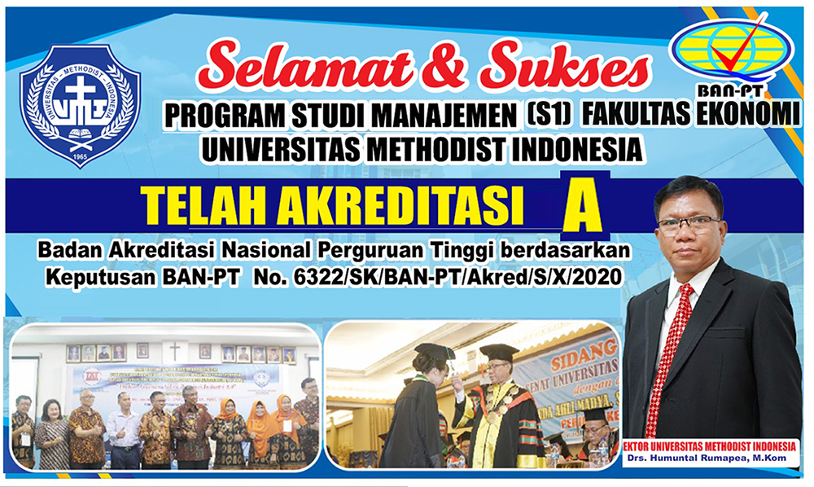

4 November 2024
Universitas Methodist Indonesia (UMI) baru-baru ini mendapatkan penghargaan sebagai salah satu kampus terbaik di Indonesia. Penghargaan ini diberikan oleh Kementerian Pendidikan dan Kebudayaan Republik Indonesia dalam acara tahunan yang diadakan di Jakarta.
Prestasi ini didasarkan pada berbagai aspek, seperti kualitas pendidikan, fasilitas kampus, serta kontribusi dalam penelitian dan pengabdian masyarakat. UMI terus berkomitmen untuk meningkatkan mutu pendidikan demi mencetak generasi unggul yang siap bersaing di era globalisasi.
Rektor UMI, Dr. Alexander Simatupang, dalam pidatonya menyatakan bahwa penghargaan ini adalah hasil kerja keras seluruh civitas akademika. "Kami bangga dengan pencapaian ini dan akan terus berusaha untuk meningkatkan kualitas pendidikan di UMI," ujarnya.
Dengan adanya penghargaan ini, UMI berharap dapat menarik lebih banyak mahasiswa berbakat dari seluruh Indonesia dan terus menjadi salah satu universitas unggulan di tingkat nasional dan internasional.